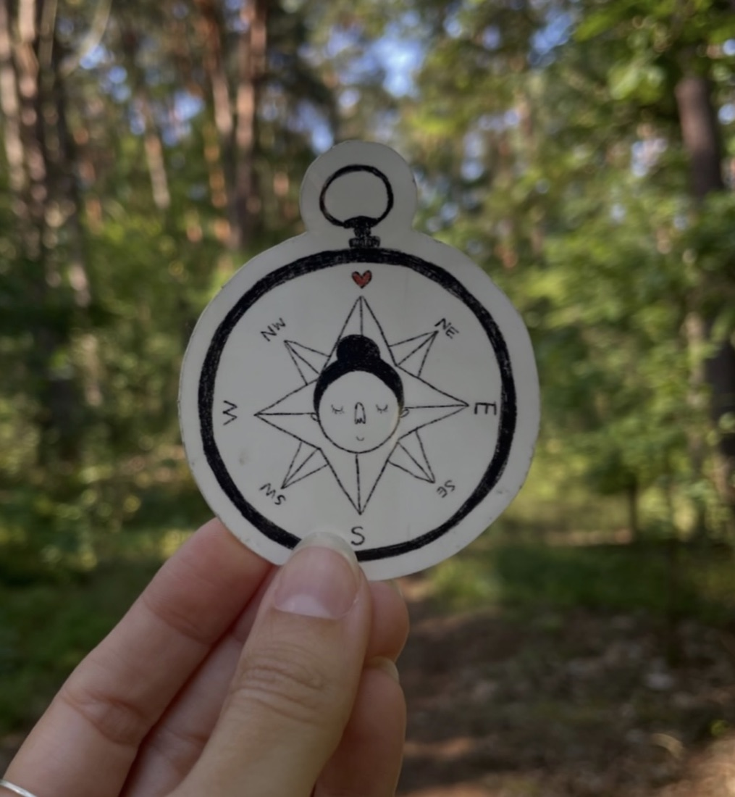
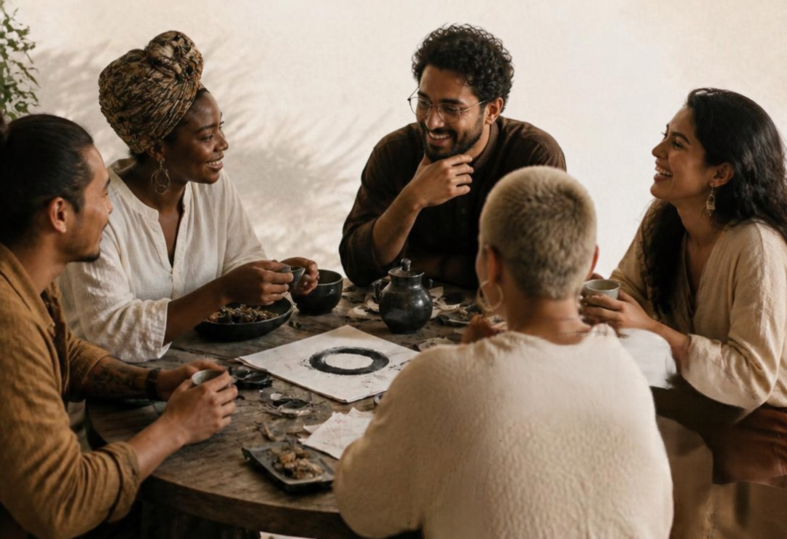
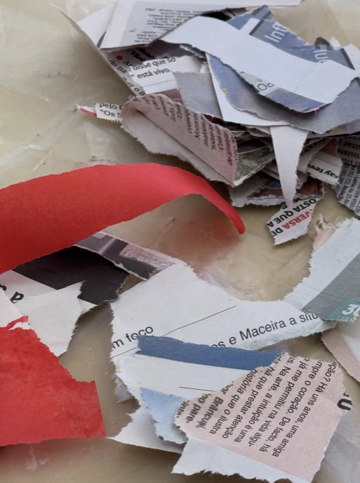
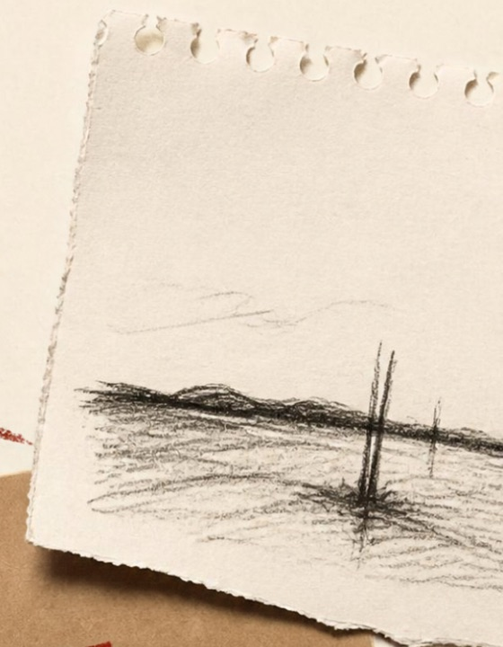
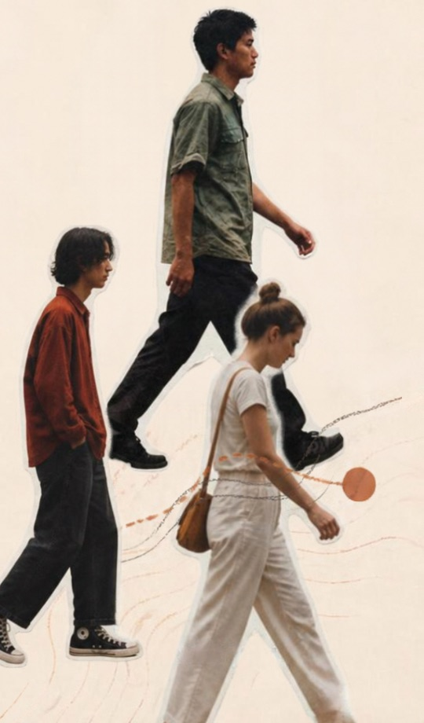
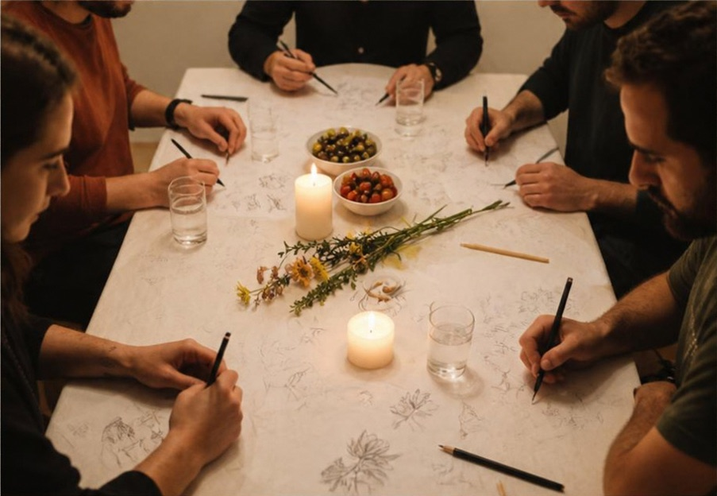
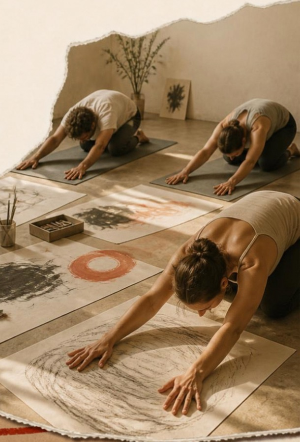

Experiences
Make space to reconnect.
Art, walking, yoga and shared tables, for slowing down and paying attention.
For individuals, small groups and gatherings
Explore ExperiencesArt, movement and thoughtful conversation. Different ways to slow down, reconnect and explore how we experience ourselves, each other and the world we create.


Making the invisible visible.

Experiences
Art, walking, yoga and shared tables, for slowing down and paying attention.
For individuals, small groups and gatherings
Explore Experiences
Work & Systems
Human-centred design and creative facilitation for teams building products and systems.
For product teams, organisations and people building what comes next
Explore InnerwareThe Experiences
For individuals, small groups and gatherings in Lisboa, Porto and online. No artistic skill needed. Just curiosity.

01Make space to reflect.
A one-to-one session using art-making, prompts and conversation to explore what's shifting in your life. For moments when something is changing and you need somewhere to put it, or a new sense of direction.

02A different kind of walk.
A slow, guided walk where we stop to look closely and draw what we notice. Let your thoughts catch up with you.

03Making room for conversation.
An intimate evening of food, drawing and the questions you don't usually get to ask. The table as a space for curiosity.

04Move. Breathe. Make. Listen.
Yoga and breathwork flow into drawing and painting. The body leads, creativity follows. We close with singing bowls and stillness: you lie down, listen and let things settle. Not another yoga class.
Dates and times vary. Send a message about the Experience you're curious about, and we'll share what's coming up or find a time that works for you.
Book or enquireReminder: the world is still slower than your screen.
Let's start with a conversation. The first call is free.
Get in touchIn their words
“This was, by far the best walk I’ve been to in a LONG time. Great to walk and see the beach and water. People were awesome and inclusive and time flew by. Thanks to the hosts for supporting this kind of fun.”
“It’s my second time going to the walk and I really love the vibe, people, locations and conversations that we have”
“Filipa es una gran anfitriona y siempre nos hace sentirnos bien a los que asistimos a sus actividades.”